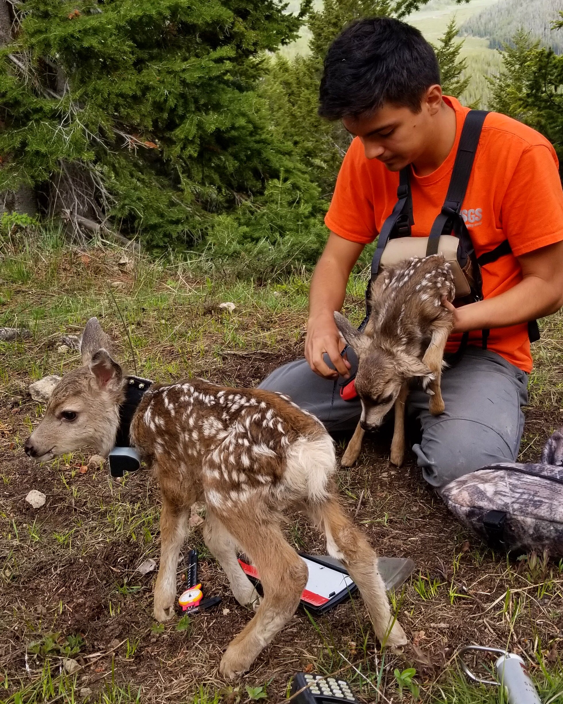
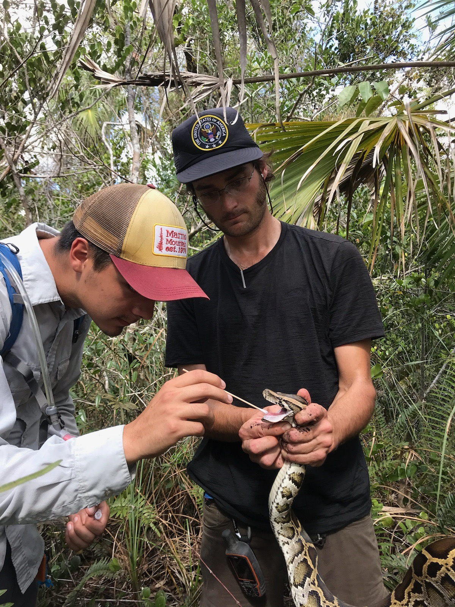
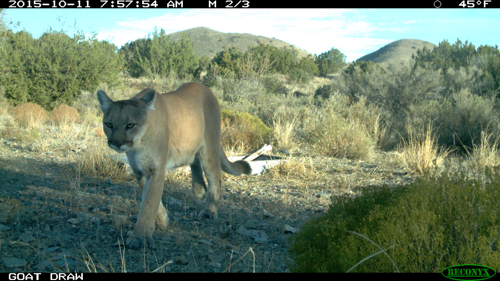
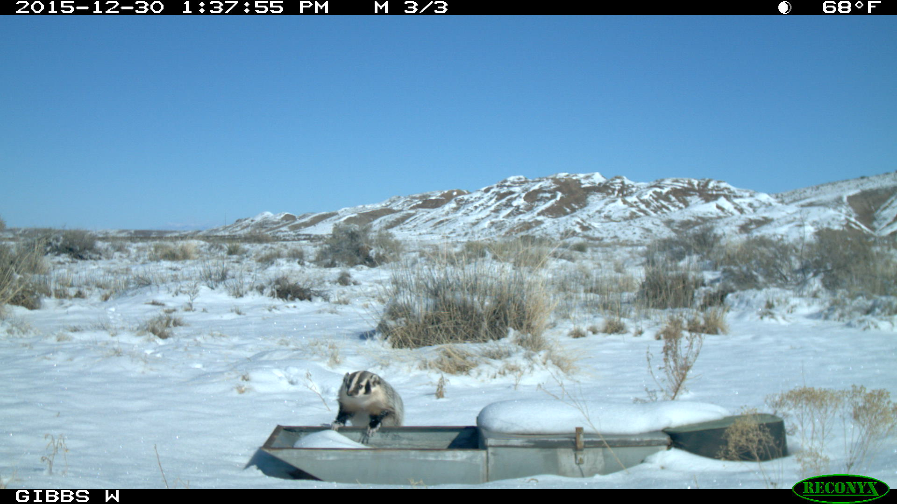
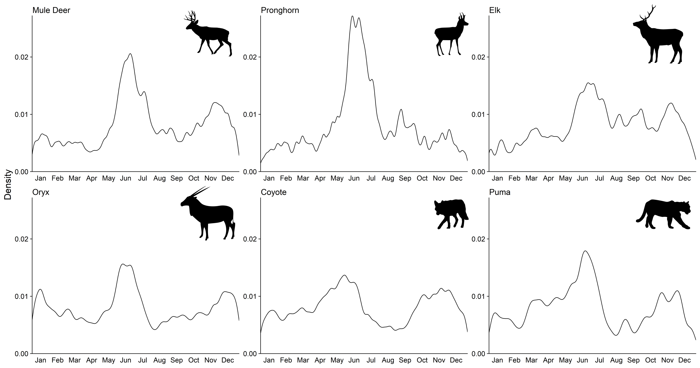
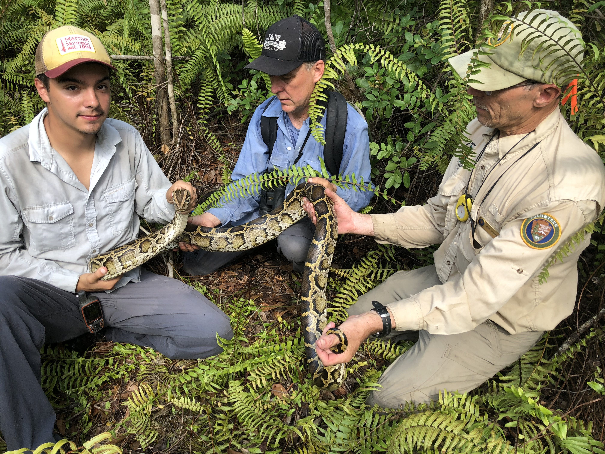

My name is Juan Camacho, and I am a master's student in the Collins Plant Ecology Lab at the University of
New
Mexico. My research focuses on using camera traps to study the timing of mammal visitation to water at
Sevilleta National Wildlife Refuge.
When I'm not working I like to go hiking with my dog, play board games with friends, and play tennis.


MAMMAL VISITATION TO WATER
For my master's thesis I am using camera traps to study the timing of mammal visitation to water in a
semi-arid grassland. My study site is at the Sevilleta National Wildlife Refuge in New Mexico. These cameras
were deployed by the U.S. Fish and Wildlife Service in 2009 at a variety of sites on the refuge. Artificial
sources of water are supplied year-round for animals. Since this is a water limited area, I am interested in
how the timing of visitation shifts throughout the year and if there are any interactions between species
that may be cause by the water sources.

A puma passing by the camera

A badger inspects the drinker in the winter

Plot showing timing of visitation to water by mammal species at Sevilleta National Wildlife Refuge. All show
a peak in visitation to water in the summer months when conditions are at their hottest and driest.
LIZARD ECOLOGY PROJECT
Over the past two years, I have been working with two other graduate students to collect data on lizard
communities. Our goal is to lay the framework for
long-term monitoring of lizard communities at the Sevilleta National Wildlife Refuge in New Mexico. Lizards
are important secondary consumers in food webs and have been linked to primary productivity in other
systems. Through collaborations with the UNM Biology REU program, we conducted visual encounter surveys of
lizards at the core sites in 2019, 2020, and 2021. We have found that lizard communities at each site were
distinctly different from each other. Each site had a clear dominant species from the whiptail genus
Aspidoscelis (in prep).
The goal of this project is to make museum data more accessible to the public through the creation of an
interactive map displaying museum specimens across the United States. The data comes from the Museum of
Southwestern Biology. Click on the links above to learn more about the collections there!
Photos From Previous Jobs

Florida
From my time with the USGS in Big Cypress National Preserve